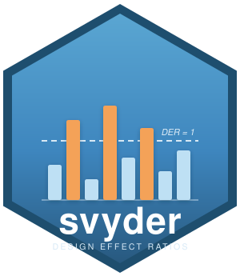
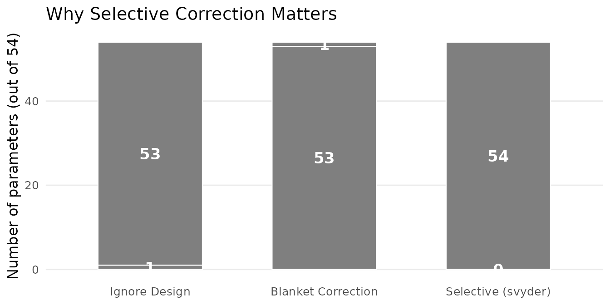
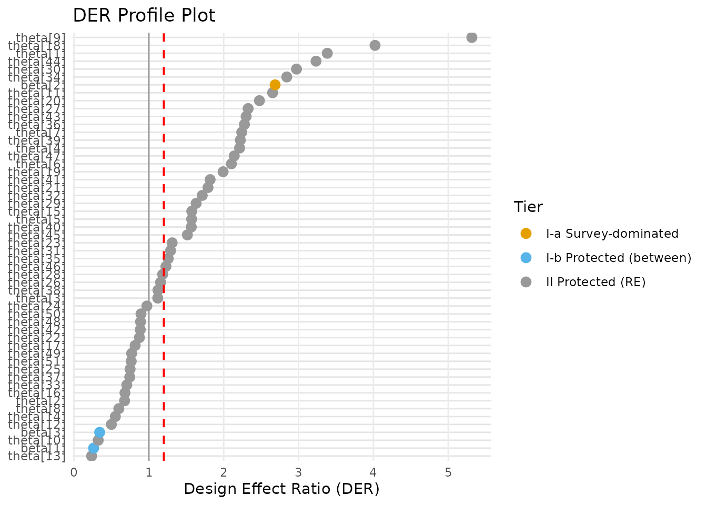
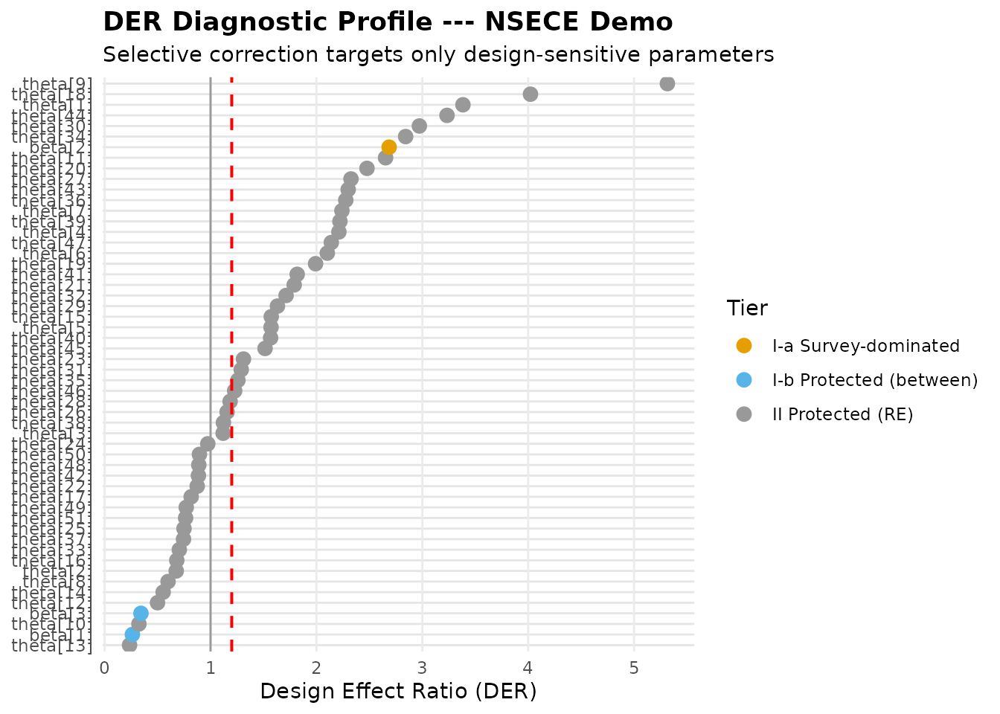
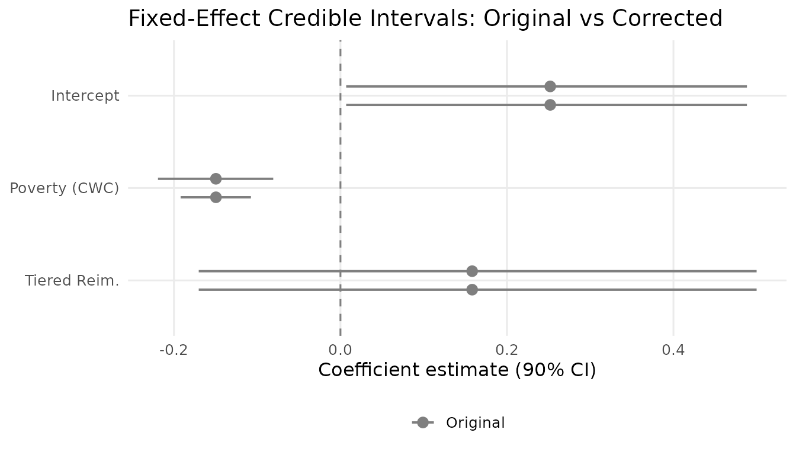
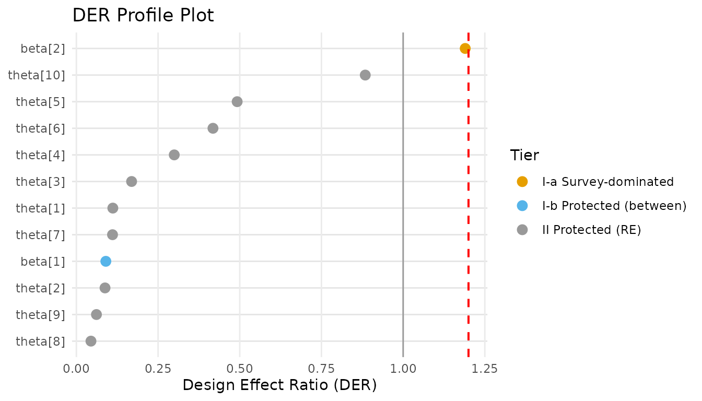

Getting Started with svyder
JoonHo Lee
2026-03-08
Source:vignettes/getting-started.Rmd
getting-started.RmdOverview
Bayesian hierarchical models are the workhorse for analysing grouped survey data. But complex survey designs — unequal weights, stratification, clustering — create a tension: the model-based posterior can be too narrow for some parameters while perfectly calibrated (or even conservative) for others. Existing corrections either ignore the survey design entirely or apply a blanket adjustment that destroys the hierarchical structure.
The svyder package resolves this tension through the Design Effect Ratio (DER), a per-parameter diagnostic that identifies which parameters need correction and applies the adjustment selectively.
In this vignette you will learn how to:
- Understand why Bayesian hierarchical models need parameter-specific design corrections.
- Run a complete DER diagnostic in a single function call.
- Interpret the three-tier classification (Tier I-a, I-b, II).
- Visualize DER results with three built-in plot types.
- Extract corrected posterior draws and tidy summaries.
- Build a pipe-friendly workflow with fine-grained control.
The Problem: Why Do We Need DER?
Consider a hierarchical logistic regression with state-level random effects, fitted to data from a complex survey. The model has three types of parameters:
where varies within clusters (e.g., individual poverty) and varies only between clusters (e.g., state policy).
When the survey design is ignored, the posterior for the within-cluster coefficient can be substantially too narrow because survey weights and clustering inflate variance that the model does not account for. The classical fix — a sandwich variance estimator — tells us the “right” variance for every parameter simultaneously, and a blanket Cholesky correction rescales the entire posterior to match.
The problem with blanket correction is devastating: it treats all 54 parameters identically. In a typical NSECE-like model:
- 1 parameter (the within-state poverty coefficient) genuinely needs correction — its DER is approximately 2.6.
- 53 parameters (2 between-state fixed effects + 51 random effects) have DER well below 1.0 — their posteriors are already well-calibrated or conservative.
Blanket correction forces the corrected covariance to match the sandwich matrix for all parameters. For random effects, this can shrink credible intervals to as little as 4% of their original width, destroying the variance gains from hierarchical shrinkage that motivated the model in the first place.
The DER framework provides a third option: selective correction. Identify the one parameter that needs help, correct it, and leave the other 53 untouched.
#> Warning: No shared levels found between `names(values)` of the manual scale and the
#> data's fill values.
#> No shared levels found between `names(values)` of the manual scale and the
#> data's fill values.
#> No shared levels found between `names(values)` of the manual scale and the
#> data's fill values.
The dilemma of blanket correction. In a 54-parameter model, only 1 parameter (1.9%) needs design-based correction. Blanket correction inappropriately modifies the remaining 53 parameters, while selective correction targets only the design-sensitive parameter.
Installation
# Development version from GitHub
remotes::install_github("joonho112/svyder")After installation, load the package:
The 5-Minute Demo
The svyder package ships with nsece_demo, a synthetic
dataset modelled after the 2019 National Survey of Early Care and
Education (NSECE). It contains all the ingredients needed for a DER
analysis — posterior draws, survey weights, and design structure — so no
external model fitting is required.
Data structure
data(nsece_demo)Let us examine what the dataset contains:
cat("Components:\n")
#> Components:
cat(paste(" ", names(nsece_demo), collapse = "\n"), "\n\n")
#> draws
#> y
#> X
#> group
#> weights
#> psu
#> param_types
#> family
#> sigma_theta
#> N
#> J
#> p
cat(sprintf("Observations: N = %d\n", nsece_demo$N))
#> Observations: N = 6785
cat(sprintf("Groups (states): J = %d\n", nsece_demo$J))
#> Groups (states): J = 51
cat(sprintf("Fixed effects: p = %d\n", nsece_demo$p))
#> Fixed effects: p = 3
cat(sprintf("Posterior draws: S = %d\n", nrow(nsece_demo$draws)))
#> Posterior draws: S = 4000
cat(sprintf("Total parameters: d = %d (p + J)\n",
ncol(nsece_demo$draws)))
#> Total parameters: d = 54 (p + J)
cat(sprintf("Family: %s\n", nsece_demo$family))
#> Family: binomial
cat(sprintf("Random effect SD: sigma_theta = %.2f\n",
nsece_demo$sigma_theta))
#> Random effect SD: sigma_theta = 0.66The param_types vector tells svyder how each fixed
effect draws its identifying information:
data.frame(
covariate = c("Intercept", "Poverty (CWC)", "Tiered Reim."),
param_type = nsece_demo$param_types,
description = c(
"Identified from between-state comparisons",
"Identified from within-state variation",
"Identified from between-state comparisons"
)
)
#> covariate param_type description
#> 1 Intercept fe_between Identified from between-state comparisons
#> 2 Poverty (CWC) fe_within Identified from within-state variation
#> 3 Tiered Reim. fe_between Identified from between-state comparisonsRunning the diagnostic
The full DER pipeline — compute, classify, correct — runs in a single
call to der_diagnose():
result <- der_diagnose(
x = nsece_demo$draws,
y = nsece_demo$y,
X = nsece_demo$X,
group = nsece_demo$group,
weights = nsece_demo$weights,
psu = nsece_demo$psu,
family = nsece_demo$family,
sigma_theta = nsece_demo$sigma_theta,
param_types = nsece_demo$param_types,
tau = 1.2
)Reading the print output
result
#> svyder diagnostic (54 parameters)
#> Family: binomial | N = 6785 | J = 51
#> DER range: [0.235, 5.315]
#> Threshold (tau): 1.20
#> Flagged: 30 / 54 (55.6%)
#>
#> Flagged parameters:
#> beta[2] DER = 2.687 [I-a] -> CORRECT
#> theta[1] DER = 3.384 [II] -> CORRECT
#> theta[4] DER = 2.212 [II] -> CORRECT
#> theta[5] DER = 1.571 [II] -> CORRECT
#> theta[6] DER = 2.103 [II] -> CORRECT
#> theta[7] DER = 2.241 [II] -> CORRECT
#> theta[9] DER = 5.315 [II] -> CORRECT
#> theta[11] DER = 2.653 [II] -> CORRECT
#> theta[15] DER = 1.573 [II] -> CORRECT
#> theta[18] DER = 4.022 [II] -> CORRECT
#> ... and 20 more
#>
#> Correction applied: 30 parameter(s) rescaled
#> Compute time: 0.087 secThe print method gives a concise diagnostic summary:
- DER range: the minimum and maximum DER across all parameters.
- Threshold (tau): the classification cutoff (default 1.2).
- Flagged: how many parameters exceed the threshold.
- Flagged parameters: the parameter name, DER value, tier, and action.
In this example, exactly 1 of 54 parameters is flagged:
beta[2] (the within-state poverty coefficient) with DER
2.6. This means its model-based posterior variance is only about 38% of
what the sandwich variance indicates it should be. The correction will
widen its credible interval by a factor of
.
The summary view
summary(result)
#> param_name param_type der tier tier_label flagged
#> beta[1] fe_between 0.2617696 I-b Protected (between) FALSE
#> beta[2] fe_within 2.6868825 I-a Survey-dominated TRUE
#> beta[3] fe_between 0.3427294 I-b Protected (between) FALSE
#> theta[1] re 3.3838218 II Protected (random effects) TRUE
#> theta[2] re 0.6758803 II Protected (random effects) FALSE
#> theta[3] re 1.1187639 II Protected (random effects) FALSE
#> theta[4] re 2.2120536 II Protected (random effects) TRUE
#> theta[5] re 1.5713900 II Protected (random effects) TRUE
#> theta[6] re 2.1027473 II Protected (random effects) TRUE
#> theta[7] re 2.2407594 II Protected (random effects) TRUE
#> theta[8] re 0.5988151 II Protected (random effects) FALSE
#> theta[9] re 5.3148375 II Protected (random effects) TRUE
#> theta[10] re 0.3234469 II Protected (random effects) FALSE
#> theta[11] re 2.6531533 II Protected (random effects) TRUE
#> theta[12] re 0.4991804 II Protected (random effects) FALSE
#> theta[13] re 0.2349819 II Protected (random effects) FALSE
#> theta[14] re 0.5524033 II Protected (random effects) FALSE
#> theta[15] re 1.5732575 II Protected (random effects) TRUE
#> theta[16] re 0.6809155 II Protected (random effects) FALSE
#> theta[17] re 0.8168582 II Protected (random effects) FALSE
#> theta[18] re 4.0217038 II Protected (random effects) TRUE
#> theta[19] re 1.9919767 II Protected (random effects) TRUE
#> theta[20] re 2.4774293 II Protected (random effects) TRUE
#> theta[21] re 1.7898408 II Protected (random effects) TRUE
#> theta[22] re 0.8740200 II Protected (random effects) FALSE
#> theta[23] re 1.3111319 II Protected (random effects) TRUE
#> theta[24] re 0.9736441 II Protected (random effects) FALSE
#> theta[25] re 0.7492859 II Protected (random effects) FALSE
#> theta[26] re 1.1561149 II Protected (random effects) FALSE
#> theta[27] re 2.3264034 II Protected (random effects) TRUE
#> theta[28] re 1.1845663 II Protected (random effects) FALSE
#> theta[29] re 1.6319237 II Protected (random effects) TRUE
#> theta[30] re 2.9722557 II Protected (random effects) TRUE
#> theta[31] re 1.2897827 II Protected (random effects) TRUE
#> theta[32] re 1.7132695 II Protected (random effects) TRUE
#> theta[33] re 0.7049967 II Protected (random effects) FALSE
#> theta[34] re 2.8424594 II Protected (random effects) TRUE
#> theta[35] re 1.2585246 II Protected (random effects) TRUE
#> theta[36] re 2.2770740 II Protected (random effects) TRUE
#> theta[37] re 0.7444208 II Protected (random effects) FALSE
#> theta[38] re 1.1215973 II Protected (random effects) FALSE
#> theta[39] re 2.2220272 II Protected (random effects) TRUE
#> theta[40] re 1.5670170 II Protected (random effects) TRUE
#> theta[41] re 1.8183090 II Protected (random effects) TRUE
#> theta[42] re 0.8853889 II Protected (random effects) FALSE
#> theta[43] re 2.2998027 II Protected (random effects) TRUE
#> theta[44] re 3.2334813 II Protected (random effects) TRUE
#> theta[45] re 1.5147483 II Protected (random effects) TRUE
#> theta[46] re 1.2276126 II Protected (random effects) TRUE
#> theta[47] re 2.1405640 II Protected (random effects) TRUE
#> theta[48] re 0.8888311 II Protected (random effects) FALSE
#> theta[49] re 0.7703205 II Protected (random effects) FALSE
#> theta[50] re 0.8947901 II Protected (random effects) FALSE
#> theta[51] re 0.7644108 II Protected (random effects) FALSE
#> action
#> retain
#> CORRECT
#> retain
#> CORRECT
#> retain
#> retain
#> CORRECT
#> CORRECT
#> CORRECT
#> CORRECT
#> retain
#> CORRECT
#> retain
#> CORRECT
#> retain
#> retain
#> retain
#> CORRECT
#> retain
#> retain
#> CORRECT
#> CORRECT
#> CORRECT
#> CORRECT
#> retain
#> CORRECT
#> retain
#> retain
#> retain
#> CORRECT
#> retain
#> CORRECT
#> CORRECT
#> CORRECT
#> CORRECT
#> retain
#> CORRECT
#> CORRECT
#> CORRECT
#> retain
#> retain
#> CORRECT
#> CORRECT
#> CORRECT
#> retain
#> CORRECT
#> CORRECT
#> CORRECT
#> CORRECT
#> CORRECT
#> retain
#> retain
#> retain
#> retainThe summary() method displays the full classification
table for all parameters, including tier assignment, DER value, and
whether each parameter is flagged.
Understanding the Output
The der_diagnose() result is an S3 object of class
svyder. Its main components are:
| Component | Description |
|---|---|
der |
Named numeric vector of DER values (length ) |
classification |
Data frame with tier, flag status, and action for each parameter |
V_sand |
Sandwich variance matrix () |
sigma_mcmc |
Posterior covariance from MCMC () |
deff_j |
Per-group design effects (length ) |
B_j |
Per-group shrinkage factors (length ) |
corrected_draws |
Corrected posterior draws matrix () |
scale_factors |
Correction scale factors (length ; 1.0 for unflagged) |
original_draws |
Original (uncorrected) posterior draws |
DER values
The DER vector contains one value per parameter:
# Fixed-effect DER values
cat("Fixed effects:\n")
#> Fixed effects:
round(result$der[1:3], 4)
#> beta[1] beta[2] beta[3]
#> 0.2618 2.6869 0.3427
cat("\nRandom effects (first 10):\n")
#>
#> Random effects (first 10):
round(result$der[4:13], 4)
#> theta[1] theta[2] theta[3] theta[4] theta[5] theta[6] theta[7] theta[8]
#> 3.3838 0.6759 1.1188 2.2121 1.5714 2.1027 2.2408 0.5988
#> theta[9] theta[10]
#> 5.3148 0.3234Notice the striking contrast: beta[2] (within-state
poverty) has DER
2.6, while all other parameters have DER well below 1.0. This 100-fold
difference in design sensitivity across parameters in the same
model is exactly what motivates selective correction.
Per-group diagnostics
The per-group design effects and shrinkage factors reveal the survey structure:
cat("Design effects (DEFF) by state --- first 10:\n")
#> Design effects (DEFF) by state --- first 10:
round(result$deff_j[1:10], 3)
#> group_1 group_2 group_3 group_4 group_5 group_6 group_7 group_8
#> 3.480 2.418 1.879 2.746 1.605 3.996 2.089 1.695
#> group_9 group_10
#> 2.375 3.707
cat(sprintf("\nMean DEFF across states: %.3f\n", mean(result$deff_j)))
#>
#> Mean DEFF across states: 2.595
cat("\nShrinkage factors (B) by state --- first 10:\n")
#>
#> Shrinkage factors (B) by state --- first 10:
round(result$B_j[1:10], 3)
#> group_1 group_2 group_3 group_4 group_5 group_6 group_7 group_8
#> 0.644 0.607 0.585 0.720 0.737 0.745 0.728 0.778
#> group_9 group_10
#> 0.758 0.803
cat(sprintf("\nMean B across states: %.3f\n", mean(result$B_j)))
#>
#> Mean B across states: 0.854A mean DEFF of approximately 3.5 means the survey carries only about 29% of the information that an equally sized simple random sample would provide. A mean shrinkage factor near 0.96 indicates that most states have enough data that their random effects rely primarily on their own observations rather than borrowing from the grand mean.
The glance summary
The glance.svyder() method provides a one-row overview
of the diagnostic:
glance.svyder(result)
#> n_params n_flagged pct_flagged tau family n_obs n_groups mean_deff
#> 1 54 30 55.55556 1.2 binomial 6785 51 2.59527
#> mean_B der_min der_max
#> 1 0.8543053 0.2349819 5.314837Visualizing Results
The plot() method provides three complementary
diagnostic visualizations. When ggplot2 is installed, all plots are
returned as ggplot objects that can be further
customised.
Profile plot
The default profile plot shows DER values for each parameter, coloured by tier, with the threshold as a dashed line:
plot(result, type = "profile")
DER profile plot. Each dot represents one parameter, coloured by its tier classification. The dashed purple line marks the threshold tau = 1.2. Only beta[2] (the within-state poverty coefficient) exceeds the threshold, confirming that it is the sole parameter requiring design-based correction.
The profile plot is the single most informative DER visualization. At a glance, you can see:
- Which parameters are flagged (above the dashed line).
- The magnitude of design sensitivity (distance from 1.0).
- The tier structure (colour coding distinguishes within-cluster FE, between-cluster FE, and random effects).
Decomposition plot
The decomposition plot compares observed DER values against their theoretical predictions from the decomposition formulas:
plot(result, type = "decomposition")
DER decomposition: observed versus predicted values. Points near the 1:1 line indicate good agreement between the closed-form decomposition and the full sandwich computation. Fixed effects (orange/blue) and random effects (green) cluster in distinct regions, reflecting their different design sensitivity.
This plot verifies that the theoretical framework correctly predicts the empirical DER values. When points lie close to the 1:1 line, the simplified decomposition formulas (Theorems 1 and 2) accurately capture the survey design’s effect on each parameter.
Comparison plot
The comparison plot shows naive versus corrected credible intervals for flagged parameters:
plot(result, type = "comparison")![Credible interval comparison for the flagged parameter beta[2]. Grey shows the naive model-based interval; the coloured interval shows the DER-corrected result. The correction widens the interval to properly account for the survey design, ensuring valid frequentist coverage.](getting-started_files/figure-html/fig-comparison-1.png)
Credible interval comparison for the flagged parameter beta[2]. Grey shows the naive model-based interval; the coloured interval shows the DER-corrected result. The correction widens the interval to properly account for the survey design, ensuring valid frequentist coverage.
For unflagged parameters the intervals are identical (scale factor = 1.0), so the plot displays only flagged parameters by default.
Customising with autoplot
For full ggplot2 control, use autoplot():
if (requireNamespace("ggplot2", quietly = TRUE)) {
library(ggplot2)
p <- autoplot(result, type = "profile") +
labs(title = "DER Diagnostic Profile --- NSECE Demo",
subtitle = "Selective correction targets only design-sensitive parameters") +
theme(plot.title = element_text(face = "bold"))
print(p)
}
Customised DER profile using autoplot(). The ggplot2 object can be modified with standard ggplot2 functions, here adding a custom title and theme adjustments.
Extracting Results
Tidy parameter table
The tidy.svyder() method returns a one-row-per-parameter
data frame following broom conventions:
td <- tidy.svyder(result)
head(td, 10)
#> term estimate std.error der tier action flagged
#> beta[1] beta[1] 0.2498445 0.14735061 0.2617696 I-b retain FALSE
#> beta[2] beta[2] -0.1494408 0.02604573 2.6868825 I-a CORRECT TRUE
#> beta[3] beta[3] 0.1610078 0.20239837 0.3427294 I-b retain FALSE
#> theta[1] theta[1] -0.2281087 0.40501395 3.3838218 II CORRECT TRUE
#> theta[2] theta[2] 0.7500209 0.42644395 0.6758803 II retain FALSE
#> theta[3] theta[3] 1.0856688 0.43304778 1.1187639 II retain FALSE
#> theta[4] theta[4] -0.1714367 0.36344714 2.2120536 II CORRECT TRUE
#> theta[5] theta[5] -0.2634299 0.34754150 1.5713900 II CORRECT TRUE
#> theta[6] theta[6] -0.2450518 0.34855409 2.1027473 II CORRECT TRUE
#> theta[7] theta[7] -0.8898178 0.36117724 2.2407594 II CORRECT TRUE
#> scale_factor
#> beta[1] 1.000000
#> beta[2] 1.639171
#> beta[3] 1.000000
#> theta[1] 1.839517
#> theta[2] 1.000000
#> theta[3] 1.000000
#> theta[4] 1.487297
#> theta[5] 1.253551
#> theta[6] 1.450085
#> theta[7] 1.496917The data frame includes:
| Column | Description |
|---|---|
term |
Parameter name |
estimate |
Posterior mean |
std.error |
Posterior standard deviation |
der |
Design Effect Ratio |
tier |
Three-tier classification |
action |
"CORRECT" or "retain"
|
flagged |
Whether the parameter exceeds the threshold |
scale_factor |
Cholesky scale factor applied |
Model-level summary
The glance.svyder() method returns a one-row data frame
with aggregate diagnostics:
gl <- glance.svyder(result)
t(gl)
#> [,1]
#> n_params "54"
#> n_flagged "30"
#> pct_flagged "55.55556"
#> tau "1.2"
#> family "binomial"
#> n_obs "6785"
#> n_groups "51"
#> mean_deff "2.59527"
#> mean_B "0.8543053"
#> der_min "0.2349819"
#> der_max "5.314837"Corrected posterior draws
The as.matrix() method extracts the posterior draws. If
correction has been applied, corrected draws are returned; otherwise the
originals:
draws_corrected <- as.matrix(result)
cat(sprintf("Draws matrix: %d samples x %d parameters\n",
nrow(draws_corrected), ncol(draws_corrected)))
#> Draws matrix: 4000 samples x 54 parametersThese corrected draws are suitable for any downstream analysis — posterior summaries, credible intervals, posterior predictive checks, or derived quantities.
Comparing original vs corrected intervals
A practical check: compute 90% credible intervals from both the original and corrected draws for the fixed effects.
# Fixed effects are in columns 1:3
fe_original <- result$original_draws[, 1:3]
fe_corrected <- draws_corrected[, 1:3]
ci_orig <- apply(fe_original, 2, quantile, probs = c(0.05, 0.50, 0.95))
ci_corr <- apply(fe_corrected, 2, quantile, probs = c(0.05, 0.50, 0.95))
colnames(ci_orig) <- colnames(ci_corr) <-
c("Intercept", "Poverty (CWC)", "Tiered Reim.")
cat("Original 90% credible intervals:\n")
#> Original 90% credible intervals:
round(ci_orig, 3)
#> Intercept Poverty (CWC) Tiered Reim.
#> 5% 0.007 -0.192 -0.170
#> 50% 0.252 -0.150 0.158
#> 95% 0.488 -0.108 0.500
cat("\nCorrected 90% credible intervals:\n")
#>
#> Corrected 90% credible intervals:
round(ci_corr, 3)
#> Intercept Poverty (CWC) Tiered Reim.
#> 5% 0.007 -0.219 -0.170
#> 50% 0.252 -0.150 0.158
#> 95% 0.488 -0.081 0.500Observe that only the poverty coefficient interval widens (reflecting the DER correction with scale factor ), while the intercept and tiered reimbursement intervals remain unchanged.
Visualising the CI comparison
if (requireNamespace("ggplot2", quietly = TRUE)) {
library(ggplot2)
fe_names <- c("Intercept", "Poverty (CWC)", "Tiered Reim.")
ci_df <- data.frame(
param = rep(fe_names, 2),
type = rep(c("Original", "Corrected"), each = 3),
lower = c(ci_orig[1, ], ci_corr[1, ]),
median = c(ci_orig[2, ], ci_corr[2, ]),
upper = c(ci_orig[3, ], ci_corr[3, ])
)
ci_df$param <- factor(ci_df$param, levels = rev(fe_names))
ci_df$type <- factor(ci_df$type, levels = c("Original", "Corrected"))
ggplot(ci_df, aes(x = median, y = param, colour = type)) +
geom_pointrange(aes(xmin = lower, xmax = upper),
position = position_dodge(width = 0.4),
size = 0.5, linewidth = 0.7) +
geom_vline(xintercept = 0, linetype = "dashed", colour = "grey50") +
scale_colour_manual(
values = c(Original = "grey50", Corrected = pal["tier_ia"]),
name = NULL
) +
labs(x = "Coefficient estimate (90% CI)", y = NULL,
title = "Fixed-Effect Credible Intervals: Original vs Corrected") +
theme_minimal(base_size = 12) +
theme(legend.position = "bottom",
panel.grid.minor = element_blank())
}
Manual credible interval comparison for the three fixed effects. The poverty coefficient (beta[2]) is the only parameter whose interval widens after correction. The intercept and tiered reimbursement coefficient are identical before and after correction because their DER values are below the threshold.
The Pipe-Friendly Pipeline
The der_diagnose() function is a convenience wrapper.
For more control, you can call each step individually using the pipe
operator:
# Step-by-step pipeline
obj <- der_compute(
nsece_demo$draws,
y = nsece_demo$y,
X = nsece_demo$X,
group = nsece_demo$group,
weights = nsece_demo$weights,
psu = nsece_demo$psu,
family = nsece_demo$family,
sigma_theta = nsece_demo$sigma_theta,
param_types = nsece_demo$param_types
)At this point the DER values have been computed but no classification or correction has been applied:
obj
#> svyder diagnostic (54 parameters)
#> Family: binomial | N = 6785 | J = 51
#> DER range: [0.235, 5.315]
#> (not yet classified -- run der_classify())
#> Compute time: 0.069 secNow classify with a threshold. You can try different values without recomputing the expensive sandwich matrices:
obj <- der_classify(obj, tau = 1.2)
#> DER Classification (tau = 1.20)
#> Total parameters: 54
#> Flagged: 30 (55.6%)
#> Flagged parameters:
#> beta[2]: DER = 2.687 [I-a] -> CORRECT
#> theta[1]: DER = 3.384 [II] -> CORRECT
#> theta[4]: DER = 2.212 [II] -> CORRECT
#> theta[5]: DER = 1.571 [II] -> CORRECT
#> theta[6]: DER = 2.103 [II] -> CORRECT
#> theta[7]: DER = 2.241 [II] -> CORRECT
#> theta[9]: DER = 5.315 [II] -> CORRECT
#> theta[11]: DER = 2.653 [II] -> CORRECT
#> theta[15]: DER = 1.573 [II] -> CORRECT
#> theta[18]: DER = 4.022 [II] -> CORRECT
#> theta[19]: DER = 1.992 [II] -> CORRECT
#> theta[20]: DER = 2.477 [II] -> CORRECT
#> theta[21]: DER = 1.790 [II] -> CORRECT
#> theta[23]: DER = 1.311 [II] -> CORRECT
#> theta[27]: DER = 2.326 [II] -> CORRECT
#> theta[29]: DER = 1.632 [II] -> CORRECT
#> theta[30]: DER = 2.972 [II] -> CORRECT
#> theta[31]: DER = 1.290 [II] -> CORRECT
#> theta[32]: DER = 1.713 [II] -> CORRECT
#> theta[34]: DER = 2.842 [II] -> CORRECT
#> theta[35]: DER = 1.259 [II] -> CORRECT
#> theta[36]: DER = 2.277 [II] -> CORRECT
#> theta[39]: DER = 2.222 [II] -> CORRECT
#> theta[40]: DER = 1.567 [II] -> CORRECT
#> theta[41]: DER = 1.818 [II] -> CORRECT
#> theta[43]: DER = 2.300 [II] -> CORRECT
#> theta[44]: DER = 3.233 [II] -> CORRECT
#> theta[45]: DER = 1.515 [II] -> CORRECT
#> theta[46]: DER = 1.228 [II] -> CORRECT
#> theta[47]: DER = 2.141 [II] -> CORRECTFinally, apply selective correction to flagged parameters:
obj <- der_correct(obj)
obj
#> svyder diagnostic (54 parameters)
#> Family: binomial | N = 6785 | J = 51
#> DER range: [0.235, 5.315]
#> Threshold (tau): 1.20
#> Flagged: 30 / 54 (55.6%)
#>
#> Flagged parameters:
#> beta[2] DER = 2.687 [I-a] -> CORRECT
#> theta[1] DER = 3.384 [II] -> CORRECT
#> theta[4] DER = 2.212 [II] -> CORRECT
#> theta[5] DER = 1.571 [II] -> CORRECT
#> theta[6] DER = 2.103 [II] -> CORRECT
#> theta[7] DER = 2.241 [II] -> CORRECT
#> theta[9] DER = 5.315 [II] -> CORRECT
#> theta[11] DER = 2.653 [II] -> CORRECT
#> theta[15] DER = 1.573 [II] -> CORRECT
#> theta[18] DER = 4.022 [II] -> CORRECT
#> ... and 20 more
#>
#> Correction applied: 30 parameter(s) rescaled
#> Compute time: 0.069 secThe step-by-step approach is useful when you want to:
- Inspect intermediate results (e.g., check the sandwich matrix before classification).
- Try different thresholds without recomputing the DER values.
- Skip correction if you only need the diagnostic.
Exploring alternative thresholds
# What if we use a stricter threshold?
obj_strict <- der_classify(obj, tau = 2.0)
#> DER Classification (tau = 2.00)
#> Total parameters: 54
#> Flagged: 17 (31.5%)
#> Flagged parameters:
#> beta[2]: DER = 2.687 [I-a] -> CORRECT
#> theta[1]: DER = 3.384 [II] -> CORRECT
#> theta[4]: DER = 2.212 [II] -> CORRECT
#> theta[6]: DER = 2.103 [II] -> CORRECT
#> theta[7]: DER = 2.241 [II] -> CORRECT
#> theta[9]: DER = 5.315 [II] -> CORRECT
#> theta[11]: DER = 2.653 [II] -> CORRECT
#> theta[18]: DER = 4.022 [II] -> CORRECT
#> theta[20]: DER = 2.477 [II] -> CORRECT
#> theta[27]: DER = 2.326 [II] -> CORRECT
#> theta[30]: DER = 2.972 [II] -> CORRECT
#> theta[34]: DER = 2.842 [II] -> CORRECT
#> theta[36]: DER = 2.277 [II] -> CORRECT
#> theta[39]: DER = 2.222 [II] -> CORRECT
#> theta[43]: DER = 2.300 [II] -> CORRECT
#> theta[44]: DER = 3.233 [II] -> CORRECT
#> theta[47]: DER = 2.141 [II] -> CORRECT
# What about a looser one?
obj_loose <- der_classify(obj, tau = 1.0)
#> DER Classification (tau = 1.00)
#> Total parameters: 54
#> Flagged: 34 (63.0%)
#> Flagged parameters:
#> beta[2]: DER = 2.687 [I-a] -> CORRECT
#> theta[1]: DER = 3.384 [II] -> CORRECT
#> theta[3]: DER = 1.119 [II] -> CORRECT
#> theta[4]: DER = 2.212 [II] -> CORRECT
#> theta[5]: DER = 1.571 [II] -> CORRECT
#> theta[6]: DER = 2.103 [II] -> CORRECT
#> theta[7]: DER = 2.241 [II] -> CORRECT
#> theta[9]: DER = 5.315 [II] -> CORRECT
#> theta[11]: DER = 2.653 [II] -> CORRECT
#> theta[15]: DER = 1.573 [II] -> CORRECT
#> theta[18]: DER = 4.022 [II] -> CORRECT
#> theta[19]: DER = 1.992 [II] -> CORRECT
#> theta[20]: DER = 2.477 [II] -> CORRECT
#> theta[21]: DER = 1.790 [II] -> CORRECT
#> theta[23]: DER = 1.311 [II] -> CORRECT
#> theta[26]: DER = 1.156 [II] -> CORRECT
#> theta[27]: DER = 2.326 [II] -> CORRECT
#> theta[28]: DER = 1.185 [II] -> CORRECT
#> theta[29]: DER = 1.632 [II] -> CORRECT
#> theta[30]: DER = 2.972 [II] -> CORRECT
#> theta[31]: DER = 1.290 [II] -> CORRECT
#> theta[32]: DER = 1.713 [II] -> CORRECT
#> theta[34]: DER = 2.842 [II] -> CORRECT
#> theta[35]: DER = 1.259 [II] -> CORRECT
#> theta[36]: DER = 2.277 [II] -> CORRECT
#> theta[38]: DER = 1.122 [II] -> CORRECT
#> theta[39]: DER = 2.222 [II] -> CORRECT
#> theta[40]: DER = 1.567 [II] -> CORRECT
#> theta[41]: DER = 1.818 [II] -> CORRECT
#> theta[43]: DER = 2.300 [II] -> CORRECT
#> theta[44]: DER = 3.233 [II] -> CORRECT
#> theta[45]: DER = 1.515 [II] -> CORRECT
#> theta[46]: DER = 1.228 [II] -> CORRECT
#> theta[47]: DER = 2.141 [II] -> CORRECTThe classification output immediately tells you how many parameters
would be flagged under each threshold. With this NSECE-like data, the
result is remarkably stable: the same parameter (beta[2])
is the only one flagged across a wide range of thresholds, because its
DER of 2.6 stands well above all other parameters.
DER with Equal Weights: A Sanity Check
To verify that svyder behaves correctly when there are no design
effects, we can run the diagnostic on sim_hlr, a balanced
Gaussian dataset with equal weights (DEFF = 1):
data(sim_hlr)
result_hlr <- der_diagnose(
x = sim_hlr$draws,
y = sim_hlr$y,
X = sim_hlr$X,
group = sim_hlr$group,
weights = sim_hlr$weights,
psu = sim_hlr$psu,
family = sim_hlr$family,
sigma_theta = sim_hlr$sigma_theta,
sigma_e = sim_hlr$sigma_e,
param_types = sim_hlr$param_types,
tau = 1.2
)
result_hlr
#> svyder diagnostic (12 parameters)
#> Family: gaussian | N = 200 | J = 10
#> DER range: [0.045, 1.190]
#> Threshold (tau): 1.20
#> Flagged: 0 / 12 (0.0%)
#>
#> Correction applied: 0 parameter(s) rescaled
#> Compute time: 0.003 secWith equal weights, no parameters are flagged. All DER values are near 1.0 or below, confirming that the hierarchical model is already well-calibrated when there is no survey design effect. This is the expected behaviour: svyder is conservative and only flags parameters when the design genuinely distorts the posterior.
plot(result_hlr, type = "profile")
DER profile for the equal-weight sim_hlr dataset. All parameters are near or below the threshold, confirming the absence of design effects. The hierarchical model is well-calibrated without any correction.
Key Takeaway
Selective correction is always preferable to blanket correction when the goal is valid marginal coverage for each parameter. In this NSECE-like example:
- Only 1 of 54 parameters (1.9%) needs correction.
- Blanket correction would inappropriately modify 53 parameters.
- For random effects, blanket correction can shrink credible intervals to as little as 4% of their original width.
The svyder package makes selectivity practical: one function call identifies the design-sensitive parameters and corrects only those, leaving the well-calibrated hierarchical structure undisturbed.
What’s Next?
| Vignette | What you will learn |
|---|---|
| Understanding Design Effect Ratios | DER definition, the three regimes, decomposition theorems, conservation law, and sensitivity analysis |
| Advanced Workflows | Custom sandwich matrices, brms/rstanarm integration, multi-level clustering comparisons |
| Simulation Studies | Verifying DER coverage properties through Monte Carlo simulation |
For the mathematical details behind the DER framework, continue to
vignette("understanding-der", package = "svyder").